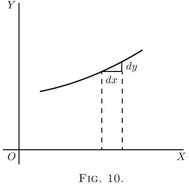
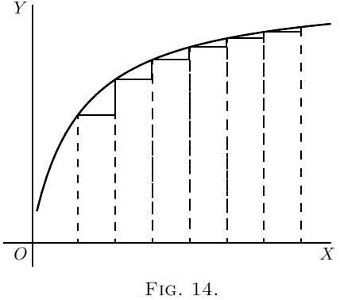
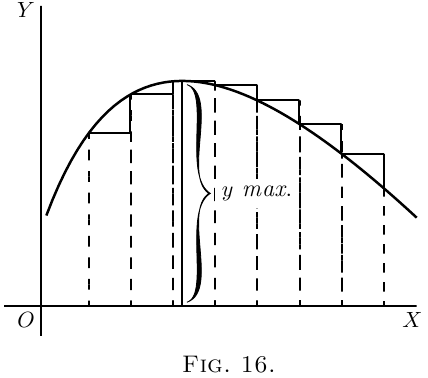
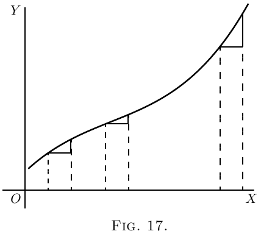
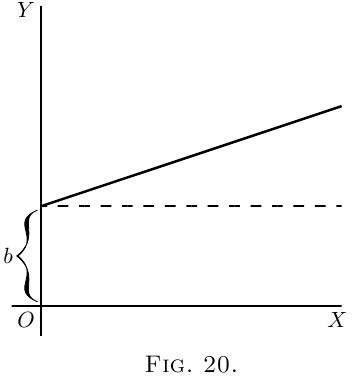
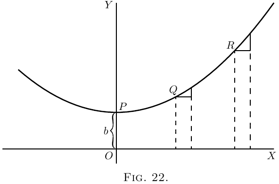

在 图 7 中，令 $PQR$ 为相对于坐标轴 $OX$ 和 $OY$ 绘制的曲线的一部分。考虑这条曲线上任意一点 $Q$，该点的横坐标为 $x$，纵坐标为 $y$。现在观察当 $x$ 变化时 $y$ 如何变化。如果使 $x$ 向右增加一个小增量 $dx$，则可以观察到 $y$ 也（在*此*特定曲线中）增加了一个小增量 $dy$（因为此特定曲线恰好是一条*上升*曲线）。那么，$dy$ 与 $dx$ 的比率是衡量 $Q$ 和 $T$ 两点之间曲线向上倾斜程度的量度。事实上，在图中可以看到，$Q$ 和 $T$ 之间的曲线有许多不同的斜率，因此我们不能很好地谈论 $Q$ 和 $T$ 之间曲线的斜率。但是，如果 $Q$ 和 $T$ 彼此非常靠近，以至于曲线的小部分 $QT$ 实际上是直线，那么可以说比率 $\dfrac{dy}{dx}$ 是曲线沿着 $QT$ 的斜率。在任何一侧延伸的直线 $QT$ 仅沿部分 $QT$ 与曲线相切，如果该部分无限小，则直线将实际上仅在一个点与曲线相切，因此是曲线的*切线*。
这条曲线的切线显然具有与 $QT$ 相同的斜率，因此 $\dfrac{dy}{dx}$ 是曲线在找到 $\dfrac{dy}{dx}$ 值的点 $Q$ 处的切线的斜率。
我们已经看到，简短的表达“曲线的斜率”没有精确的含义，因为曲线有很多斜率——实际上，曲线的每个小部分都有不同的斜率。“曲线*在某一点*的斜率”却是完全确定的东西；它是位于该点附近的曲线非常小部分的斜率；我们已经看到，这与“该点处曲线的切线的斜率”相同。
请注意，$dx$ 是向右的一小步，$dy$ 是向上相应的很小的一步。必须将这些步长视为尽可能短——实际上是无限短——尽管在图中，我们必须用不是无限小的部分来表示它们，否则它们将无法被看到。
*我们以后将大量使用 $\dfrac{dy}{dx}$ 代表曲线在任意点的斜率这一事实。*
如果曲线在特定点以 $45°$ 的角度向上倾斜，如 图 8 所示，则 $dy$ 和 $dx$ 将相等，并且 $\dfrac{dy}{dx} = 1$ 的值。
如果曲线的向上倾斜角度大于 $45°$（图 9），则 $\dfrac{dy}{dx}$ 将大于 $1$。
如果曲线的向上倾斜角度非常小，如 图 10 所示，则 $\dfrac{dy}{dx}$ 将是一个小于 $1$ 的分数。
 对于水平线或曲线中的水平位置，$dy=0$，因此 $\dfrac{dy}{dx}=0$。
如果曲线像在 图 11 中那样向下倾斜，$dy$ 将向下迈一步，因此必须计算为
负值；因此，$\dfrac{dy}{dx}$ 也将具有负号。
如果“曲线”恰好是一条直线，如 图 12 中的那样，则 $\dfrac{dy}{dx}$ 的值在该直线上的所有点都相同。换句话说，它的*斜率*是恒定的。
如果曲线是那种向右延伸时向上转得更多的曲线，则 $\dfrac{dy}{dx}$ 的值会随着陡度的增加而变得越来越大，如 图 13 所示。
如果曲线随着延伸而变得越来越平坦，则随着平坦部分的到达，$\dfrac{dy}{dx}$ 的值将变得越来越小，如 图 14 所示。

如果曲线先下降，然后再次上升，如 图 15 所示，呈现向上凹陷，那么 $\dfrac{dy}{dx}$ 将首先为负，并且随着曲线变平而值减小，然后在达到曲线谷底的点处将为零；并且从这一点开始，$\dfrac{dy}{dx}$ 将具有不断增加的正值。在这种情况下，$y$ 被称为经过一个*最小值*。$y$ 的最小值不一定是 $y$ 的最小值，它是与谷底相对应的 $y$ 值；例如，在 图 28 中（与谷底相对应的 $y$ 的值为 $1$，而 $y$ 在其他地方取的值小于该值。最小值的特征是 $y$ 必须*在其两侧*增加。
*注意*–对于使 $y$ 达到*最小值*的 $x$ 的特定值，$\dfrac{dy}{dx}$ 的值为 $0$。
如果曲线先上升然后下降，则 $\dfrac{dy}{dx}$ 的值起初为正值；然后在达到顶点时为零；然后在曲线向下倾斜时为负值，如 图 16 所示。在这种情况下，$y$ 被称为经过*最大值*，但 $y$ 的最大值不一定是 $y$ 的最大值。在 图 28 中，$y$ 的最大值为 $2\frac{1}{3}$，但这绝不是 $y$ 在曲线的某些其他点可能具有的最大值。
 
*注意*–对于使 $y$ 达到*最大值*的 $x$ 的特定值，$\dfrac{dy}{dx}$ 的值为 $0$。
如果曲线具有 图 17 的特殊形式，则 $\dfrac{dy}{dx}$ 的值始终为正值；但是，有一个特定的位置，该位置的斜率最不陡峭，其中 $\dfrac{dy}{dx}$ 的值将是最小值；也就是说，小于曲线的任何其他部分的最小值。
如果曲线具有 图 18 的形式，则 $\dfrac{dy}{dx}$ 的值在上部为负值，在下部为正值；而在曲线的顶部（该曲线实际变为垂直时），$\dfrac{dy}{dx}$ 的值将无限大。
现在我们了解了 $\dfrac{dy}{dx}$ 衡量曲线上任意点的陡度，让我们来看一些我们已经学会如何微分的方程。
(1) 作为最简单的情况，取以下式子：
\[
y=x+b.
\]
 它在 图 19 中绘制出来，为 $x$ 和 $y$ 使用相同的刻度。如果设 $x = 0$，则相应的纵坐标将为 $y = b$；也就是说，“曲线”在 $y$ 轴上的高度 $b$ 处相交。从这里开始，它以 $45°$ 的角度上升；因为对于我们赋予右侧的 $x$ 的任何值，我们都有相等的 $y$ 来上升。该线的梯度为 1 比 1。
现在，通过我们已经学过的规则（此处 和 此处），对 $y = x+b$ 进行微分，我们得到 $\dfrac{dy}{dx} = 1$。
该线的斜率使得对于向右的每小步 $dx$，我们都向上走相等的向上小步 $dy$。并且此斜率是恒定的——始终是相同的斜率。
(2) 再举一个例子：
\[
y = ax+b.
\]
我们知道，这条曲线和前面的曲线一样，将从 $y$ 轴上的高度 $b$ 处开始。但是在绘制曲线之前，让我们通过微分求出其斜率；这给出 $\dfrac{dy}{dx} = a$。斜率将是恒定的，并且以一个角度，其正切在此处称为 $a$。让我们给 $a$ 指定一些数值——例如 $\frac{1}{3}$。那么我们必须赋予它这样的斜率，使其以 $3$ 升 $1$；或
$dx$ 将是 $dy$ 的 $3$ 倍；如 图 21 中放大所示。因此，以这个斜率绘制 图 20 中的直线。
(3) 现在对于一个稍微困难的情况。
\begin{align*}
令
y= ax^2 + b.
\end{align*}
同样，曲线将在 $y$ 轴上以高于原点的 $b$ 的高度开始。
现在进行微分。[如果您忘记了，请回到 此处；或者，不如说是*不要*回头看，而是思考一下微分。]
\[
\frac{dy}{dx} = 2ax.
\]
 这表明陡度不会恒定：它会随着 $x$ 的增加而增加。在起点 $P$，
其中 $x = 0$，曲线（图 22）没有陡度——也就是说，它是水平的。在原点的左侧，其中 $x$ 具有负值，$\dfrac{dy}{dx}$ 也将具有负值，或将从左向右下降，如图所示。
让我们通过计算一个特定的实例来说明这一点。使用方程
\[
y = \tfrac{1}{4}x^2 + 3,
\]
并对其进行微分，我们得到
\[
\dfrac{dy}{dx} = \tfrac{1}{2}x.
\]
现在，将一些连续值（例如，从 $0$ 到 $5$）赋予 $x$；并通过第一个方程计算 $y$ 的相应值；并通过第二个方程计算 $\dfrac{dy}{dx}$ 的相应值。制表结果，我们有：